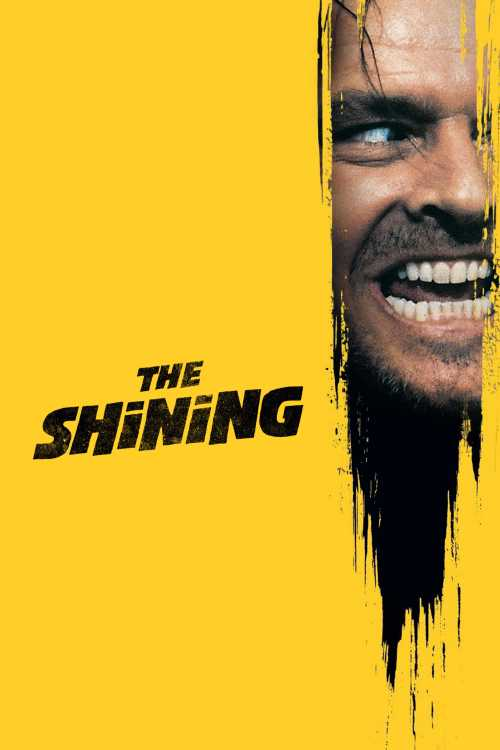

Slashers
Máscaras, cuchillas y alguien que nunca muere del todo.
-

El Resplandor
1980 · Stanley Kubrick
Videoclub · 1980 - 1989
Veinte clásicos del terror de los 80. Sierras mecánicas, casas encantadas, pesadillas y criaturas imposibles. Rebobina antes de devolver.
Ver CatálogoMáscaras, cuchillas y alguien que nunca muere del todo.

1980 · Stanley Kubrick